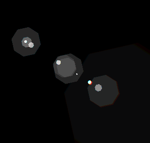
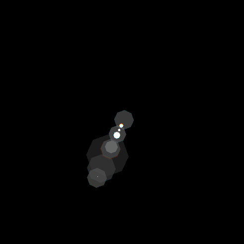
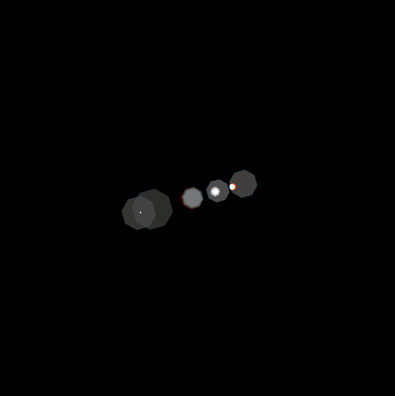
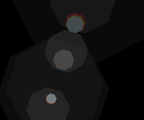
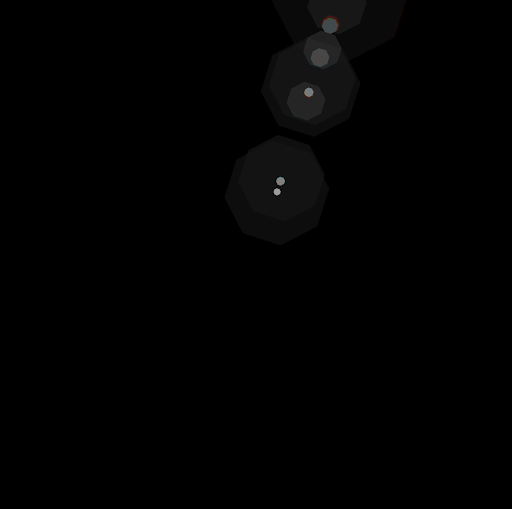

Rendering Physically-Based Lens Flare Distortions
Noah Saso, Cassandra Melax, Aatif Jiwani, Ritwik Dixit
Contents
Abstract | Starburst Effect Approach | Starburst Effect Results
Ghost Reflections Approach | Ghost Reflections Results | Final Results
Noah Saso, Cassandra Melax, Aatif Jiwani, Ritwik Dixit
Contents
Abstract | Starburst Effect Approach | Starburst Effect Results
Ghost Reflections Approach | Ghost Reflections Results | Final Results
Current methods for producing lens flare distortions are scene-independent, in the sense that they render a flare distortion without regard to the camera viewpoint or position of the sun, and synthetically overlay the distortion onto a scene that had been previously rendered or captured. In one case [1], part of the lens flare was physically captured which may prove to be expensive and possibly time inefficient. For this project, we set out to develop a method such that we could render physics-based lens flare distortions that fully depend on the viewpoint and the location of the light source.
To be able to render a physics-based flare distortion, we dug deep into the science behind what causes them. To that end, we found that lens flares are composed of two pieces: a Starburst Effect and Ghost Reflections. As such, we divided our approach to focus on each component separately.
Our implementation is based off the Project 3-1 PathTracer. Our extended code can be viewed publicly at this repository.
When nearby waves of light diffract through small apertures, the diffraction pattern that appears on an observation plane is usually modeled by the Fresnel diffraction equation. However, waves that originate especially from far-field light sources, like the sun, produce diffraction patterns that are modeled closely by the Fraunhofer diffraction equation:
The Fraunhaufer Diffraction Equation states that for a point $I = (x, y, z)$ on the observation plane, the complex magnitude of a diffracted wave with wavelength $\lambda$ is approximated by the complex integral over all points on the aperture plane $A$. Note that $k$ is the wavenumber, where $k = \frac{2\pi}{\lambda}$. With knowledge of Fourier processing, the Fraunhofer diffraction equation can be equated to a two-dimensional continuous-time Fourier transform. However, since we intended on approximating the diffraction patterns of far-field light within a path tracing engine, performing a continuous 2D integral is intractable. Therefore, for our implementation, while we ray trace a pixel we simulateneously perform Monte Carlo integration over discrete samples of an aperture function $A(x', y')$ and render the diffraction pattern to the screen.
Before we further discuss the actual implementation, it is crucial to note how we adjust the lens flare based on the scene. The raw Fraunhofer diffraction equation, and thus the 2D Fourier transform, fails to account for the direction of the light waves as it hits the aperture plane. As a result, the lens flare would always situated at the origin of the rendered image. Based on properties of Fourier processing, we found that if we additionally modulate the aperture function $A(x', y')$ by $e^{j2\pi (x'u + y'v)}$ , where $(u,v)$ of offsets, then we can properly shift the lens flare based on where the sun is in the scene. This will be further discussed in the implementation.

We partition the starburst implementation in PathTracer into three sections. The first two sections focus on gathering data we need to perform the starburst computation.
When the user inputs the COLLADA scene, we first check if there exists any directional lights. If there are, we perform the following for each and store their radiance:
As discussed above, the Starburst Effect inherently depends on the aperture function $A(x,y)$. However, to make this a tractable process, we can model the aperture function as a gray-scale image, where each pixel represents how much light will diffract if it hits that point on the aperture. Since the function is an image, we treat the aperture function $A(x,y)$ as a texture parameterized by coordinates $(u,v)$. To ensure we take only meaninful samples in the next section, we also calculate the bounding box of the non-zero region of the aperture function.


The ray-tracing procedure operates on a per-pixel basis, so to that end we compute the Starburst Effect per-pixel after the scene has been traced. We compute the starburst effect for each pixel $(x,y)$ as follows:
As a small implementation note, we added the ability to tune the size of the flare's inner radius and the overall intensity of the starburst. By tuning these parameters, we can effectively enhance the artistic nature of the lens flare.
A crucial step in producing photorealistic lens flares, after implementing the physically-based diffraction equation and other math described above, is to understand and design aperture functions that output desirable images. This involved deconstructing apertures into their smaller components and analyzing how individual attributes of the dirty models contributed to the rendered lens flares. Doing so allowed us to isolate three main features, each with their own variables:
These components in tandem work to simulate a dirty lens and create an accurate depiction of a lens flare for a given scene.
Below, the primary pupil is held constant while the effects of varying dots and lines are tested. We discovered that the presence and sizes of dots corresponded to radial artifacts that we see in the second from the left lens flare (on the bottom) which are not present in the plain one. These can lead to various subtle rings that appear toward the middle of lens flares. Additionally, lines corresponded to the 'rays' that appear to shoot out of the center of the starburst, with the slopes affecting the positions of these rays. Dots and lines as seen below simulate microscopic dust and scratches on the glass which significantly alter the diffraction of light.

After settling on varying slopes of lines as the primary contributor to realistic looking lens flares in the above trials, we then experimented with varying pupil size and shape. A pentagon shaped pupil ended up creating interesting looking flares with stronger orbs in the center and subtle patterns in the diffracted light seen below. But most importantly, the size of the pupil contributed significantly to the character and emphasized components of the output flares. Smaller central pupils led to more intense and unique lens flares, while larger apertures led to fairly dim patterns that get washed out in scenes. The smallest sizes of pupils we tried ended up looking fairly unnatural; the sweet spot is probably somewhere between the second and third aperture functions below.


The results seen above make sense since camera lenses tend to be quite small compared to the size of images they capture. The largest pupils don't produce very strong lens flares, probably because disturbances in the diffraction caused by the 'dirty' components are minimal compared to the amount of light taken in. When the pupil shrinks in relation to the scene and thus the image, the diffraction is more pronounced, and the artifacts we expect to see intensify.
Putting it all together, here are some scenes rendered with various aperture functions. On the left is the Blender scene with a directional light source.
The starburst on the far left is rendered with the smallest aperture function and more lines with similar slopes, leading to the wider gaps between the groups of rays seen in the flare. The middle starburst is created with a slightly larger pupil and a more even distribution of slopes of lines. The last flare is rendered with the largest pupil, leading to the faint pattern which is hard to differentiate from a typical point light source.
In the above scenes, we only render the pyramids with the extremes: an aperture function with a small pupil (on the left) and a large pupil (on the right). The difference is much more apparent than in the dragon scene due to the scenes' different environments. Needless to say, the aperture function used on the left is impressively photorealistic compared to the others.
Ghosts are caused by internal reflections between a camera’s lenses. As the image below shows, if we select a lens $i$ and a lens $j$ to the right of $i$, all of the rays that bounce from lens $j$ to lens $i$ and then to the sensor plane will form one ghost. The ghost more or less looks like the shape of the aperture.
We first tried implementing the approach in [2]. They used a fractional fourier transform and nonlinear transformations among other things, and did not specify a lot of key parameters. We found existing implementations and tried applying them to aperture images to create ghosts, but the results were unsuccessful, so we ended up doing the following approach with raytracing.
To find the position and size of each ghost, we did one dimensional ray tracing through the camera. Each ray is defined by 1) distance from the optical axis and 2) angle that rays hit the camera. Each is encoded as a 2D Vector. We traced rays through the camera system by multiplying each of them by a series of matrices.
Rays originate at the camera’s entrance. The rays corresponding to a ghost will come in at the angle at which the sun hits the camera. This is the same for all rays from the sun since the sun is a far-field directional light.
We used an entrance pupil size of 14.5. To get the lowest point that the rays corresponding to one ghost hit the aperture, we traced the ray $( r= 14.5, sun angle)$ onto the sensor plane. To get the highest point, we traced the ray $(r = -14.5, sun angle).$
Given the curvature/radius and index of refraction for each lens, we can define matrices for translating, refracting, and reflecting. To figure out where an incoming ray lands on the sensor plane, we multiply a vector by a series of these matrices for each lens like the one in the image below. We take the radius of the resulting ray to determine where on the sensor plane it hits. We implemented this raytracing in python first to make sure the values looked appropriate.

Ghosts are drawn on the axis from the sun to the center of the screen, and they are rotated to line up with the axis.
To get one ghost, we trace the ray with $r = 14.5$ and $r = -14.5$ as mentioned before. The rays arrive at the sensor plane with $r=r1$ and $r=r2$ respectively. As you can see from the image, $r1$ and $r2$ are the distance from the sun along the axis I just mentioned. The size of the ghost is $|r2-r1|$.
It took us hours of dissecting the paper [4] to realize this. They did not make it obvious how they were translating from 1D to 2D.
First, we wrote functions to trace rays and a function to draw a ghost given r1, r2, and a color. We then wrote a function to rotate, shift, and scale each ghost with respect to the sun. Using the sun position (normalized to be between 0 and 1), we found axis ray = (sun.x, sun.y) and sun_angle = atan2((axis_ray.y-0.5), (axis_ray.x-0.5)).
For the aperture image, we read in a picture of a pentagon, and converted it into an array of pixels that acted as a texture map. We then reused code from project 1 to draw two textured triangles for each ghost to the framebuffer.
We had to consider a few more details to get our images.
We wanted the ghosts to be added on top of the scene and stacked on top of each other, so we drew them to a “ghost_buffer” first and changed some path tracer logic.
For ray tracing, when the ray hit the aperture plane, we had to check whether the ray was within the radius of the aperture. If not, it would not go through the aperture opening, and was “blocked”. We had to recast the ray using an equation from the paper in order to find the new starting radius. With this radius and the same angle, the ray would hit the aperture plane at exactly the maximum radius, or the edge. We were supposed to scale the brightness of these ghosts since less light hit the sensor plane, but we did not have enough time.
To get the correct sizes of the ghosts, get the correct amounts of transparency, and make sure the transparency of the ghosts scaled with size, we had to tune parameters. If given more time, we might have made the ghosts a bit bigger overall, made tiny ghosts less opaque, and decreased the rate with which bigger ghosts got translucent.
Finally, different wavelengths of light refract differently through the camera. This is why we see different colored ghosts in real lens flare images as well as red and blue shifts on either side of the ghosts. To implement this, we looked up indices of refraction for each lens for green, red, and blue wavelengths. We raytraced each color through matrices with the correct indices of refraction to figure out where a ghost of that color would land and then colored the ghosts accordingly.
Here are a few renders of naked ghosts from different angles, without raytracing the scene itself or the starburst.
|  |  |  |
Here are a couple renders showing the red and blue shift for the ghosts corresponding to the different wavelengths. The image on the left is aliased since it's zoomed in.
|  |  |
The gif shows the rendering speed of one frame, the first image shows the final rendering with the physically accurate lens flare, and the second image shows a lens flare with a bunch of random ghosts for fun!.
The three images shown below are our final renders that contain both a Starburst Effect and a series of Ghost Reflections. On the left, we present a GIF depicting the render process of our Giza Pyramids scene. The render in the middle is the Giza Pyramids rendered at a different viewpoint. Notice how the lens flare has effectively shifted and how the ghost reflections have changed. The render on the right is a render with a bunch of ghosts added for fun!
We present our final animation of the Giza Pyramids scene. We've been able to modify the backend of PathTracer to save and render 500 frames (40 FPS) of the camera rotating around the pyramids. Although the Starburst remains largely static (notice how it becomes brighter near the end), the Ghost Reflections are changing in a very interesting way. Not only is the angle adjusting such that it remains on the axis towards the center, but the reflections itself are changing size and opacity as the camera's viewpoint rotates.
[1]: Wu, Yicheng et al. 2020. Single-Image Lens Flare Removal. ArXiv abs/2011.12485: n. pag.
[2]: Matthias Hullin, Elmar Eisemann, Hans-Peter Seidel, and Sungkil Lee. 2011.
Physically-based real-time lens flare rendering.
ACM Trans. Graph. 30, 4, Article 108 (July 2011),
10
pages.
DOI:https://doi.org/10.1145/2010324.1965003
[3]: Sangmin Lee and Sungkil Lee. 2016. Interactive additive diffraction
synthesis.
In
Proceedings of the 37th Annual Conference of the European Association for Computer Graphics: Posters (EG
'16).
Eurographics Association, Goslar, DEU, 11–12.
[4]: Sungkil Lee and Elmar Eisemann. 2013. Practical Real-Time Lens-Flare Rendering
.
Eurographics Symposium on Rendering, Volume 32 (2013), Number 4.
This project was easily divisible into two halves given the nature of lens flares: Aatif and Noah worked on rendering the starburst effect while Cassandra and Ritwik worked on the ghost reflection renders. Everyone helped with initial brainstorming and the creation of the report.